概述：windows操作系统安装weblogic并分析解密其密码
WebLogic版本：14.1.1.0.0
下载与安装
:bulb: 下载安装前需要安装 Java
下载地址
需要注册Oracle账户
Oracle Fusion Middleware Software Downloads
Free Oracle WebLogic Server 12c (12.2.1) Installers for Development | Oracle 中国
安装
参考文章：
补充：
也可选择还有示例的完整安装，安装完成后再进行配置！
下载zip包之后解压缩，进入解压缩目录：
java -jar fmw_14.1.1.0.0_wls_lite_generic.jar执行上述命令后就能启动安装程序了，如下所示：
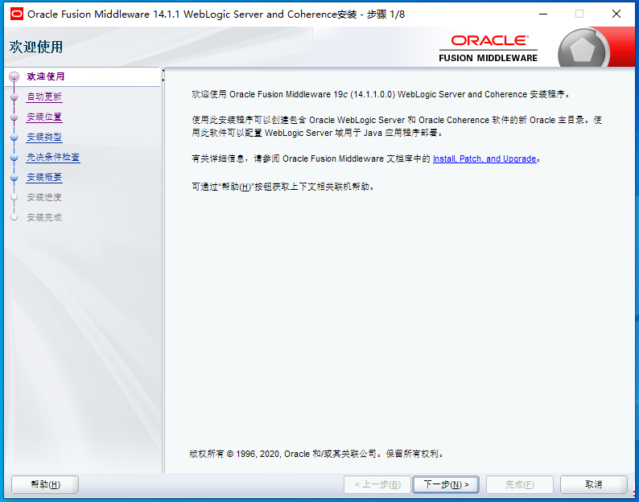
直接下一步到安装即可。
配置向导
- 创建新域
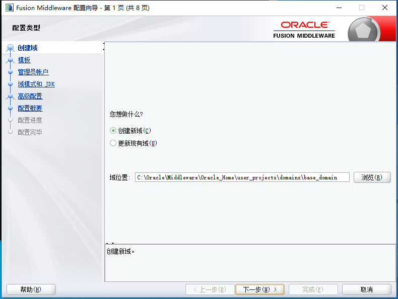
- 选择模版
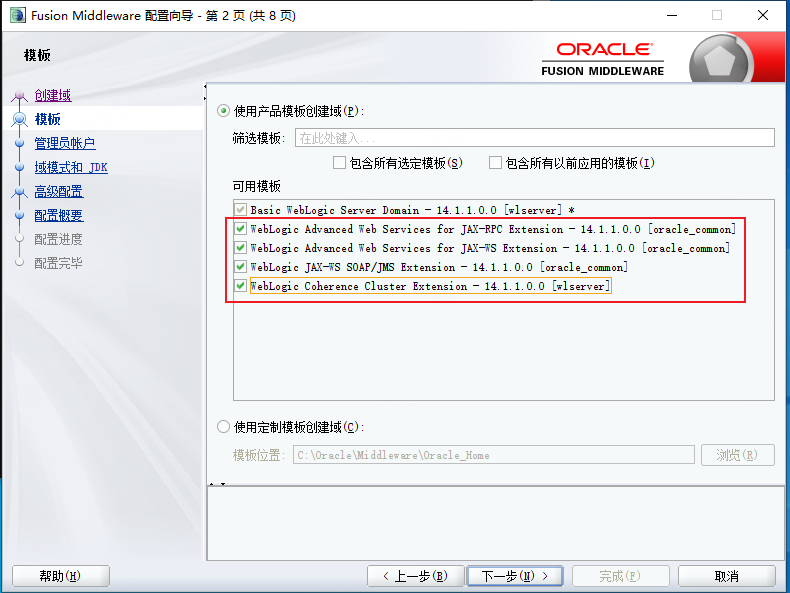
- 输入用户密码
- 选择域模式和JDK
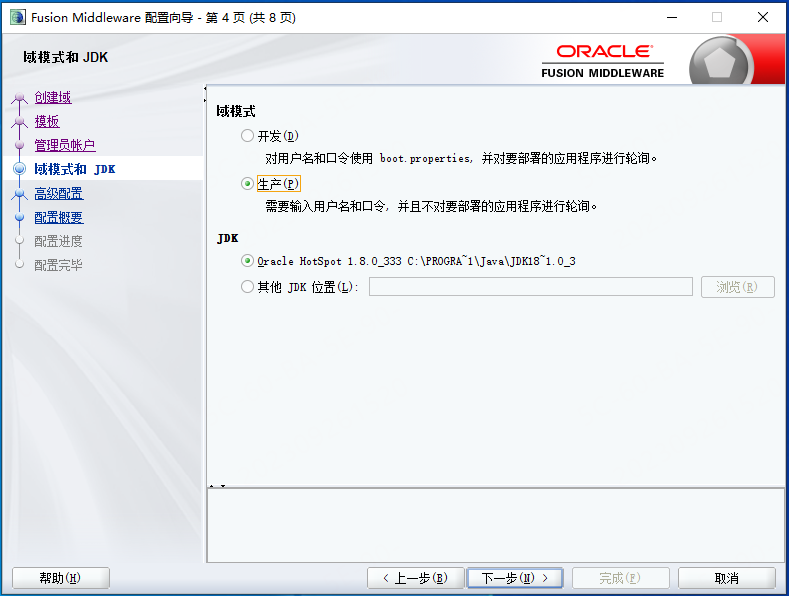
- 高级配置
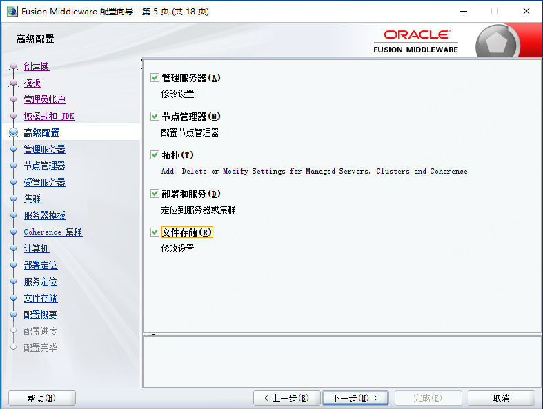
- 管理服务器
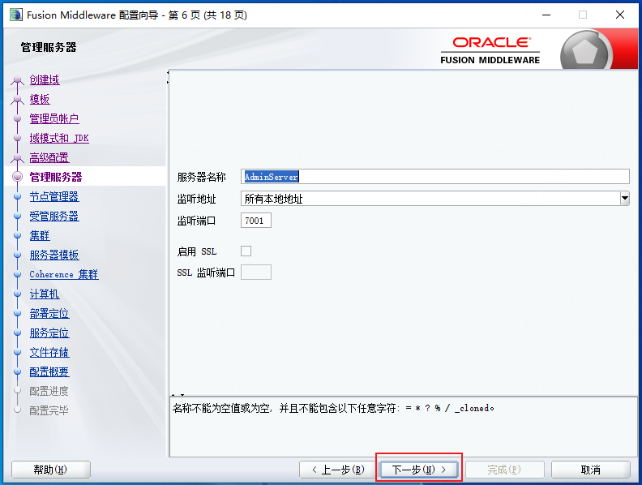
- 节点管理器
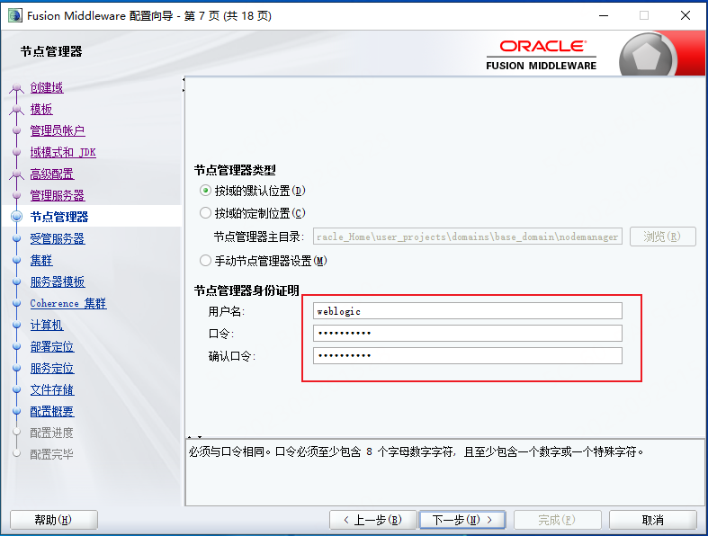
- 受管服务器
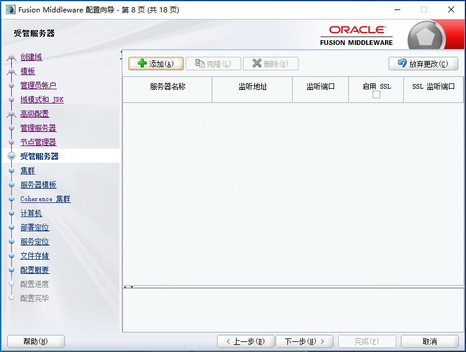
- 集群
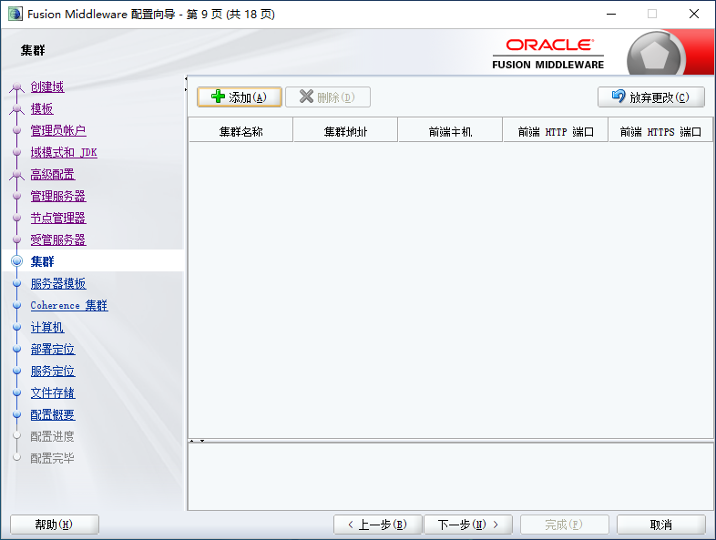
- 服务器模版
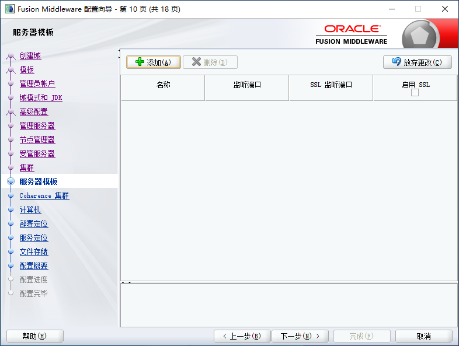
- Coherence 集群
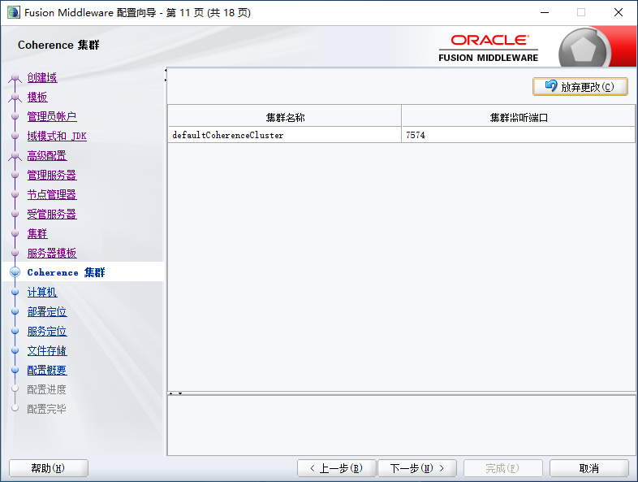
- 计算机
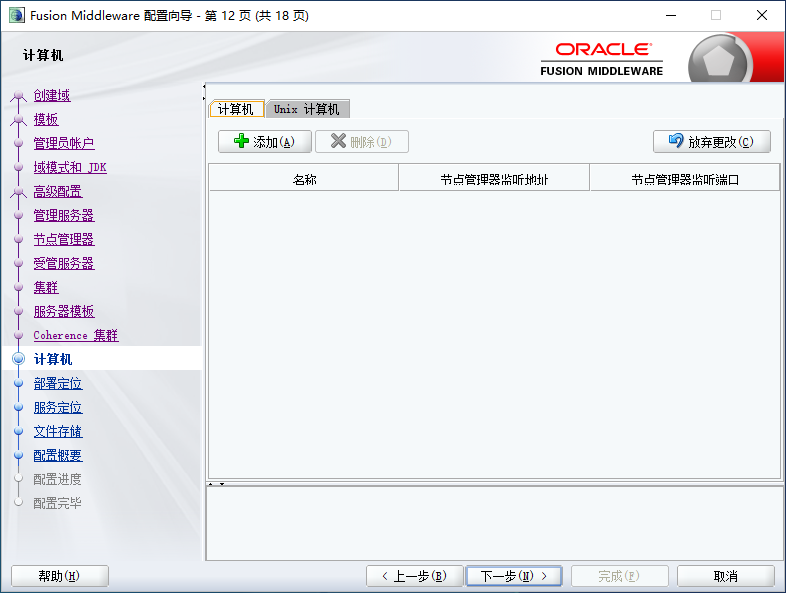
- 部署定位
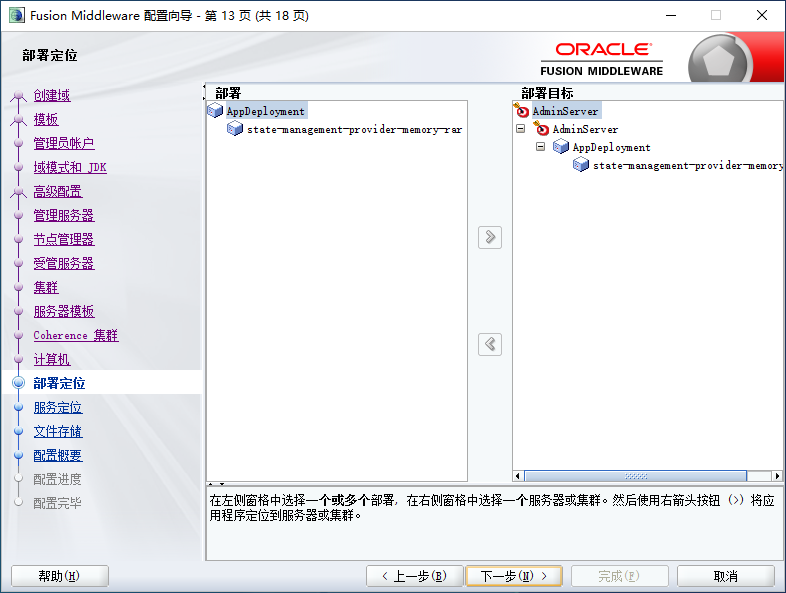
- 服务定位
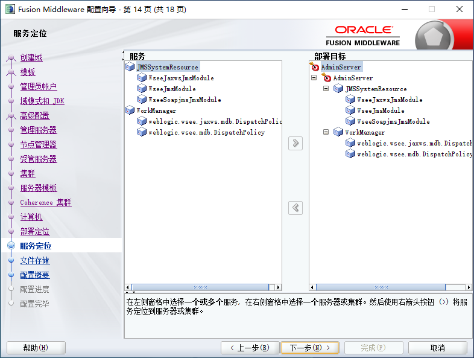
- 文件存储
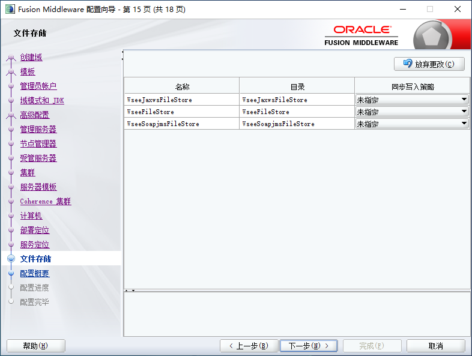
- 配置概要
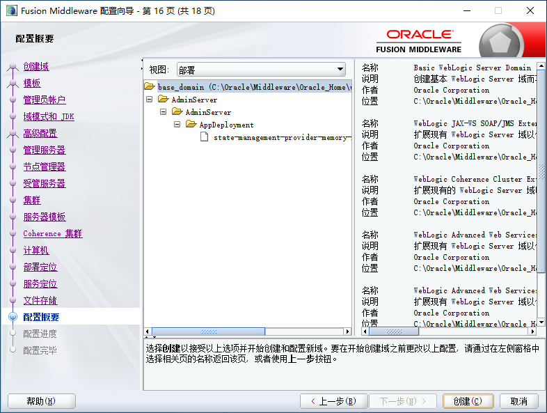
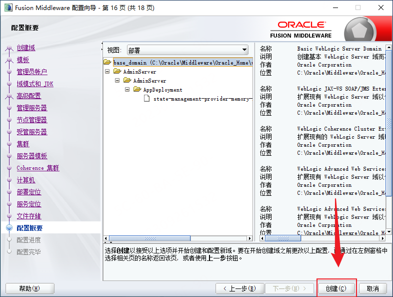
- 配置完毕，等待创建完成即可
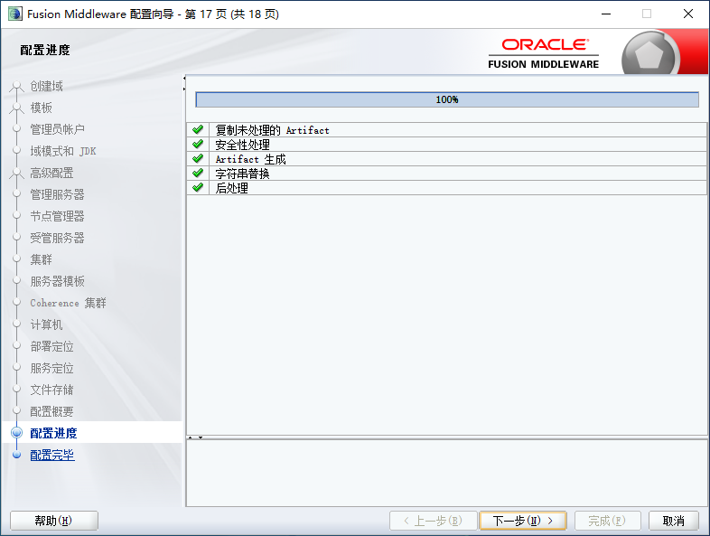
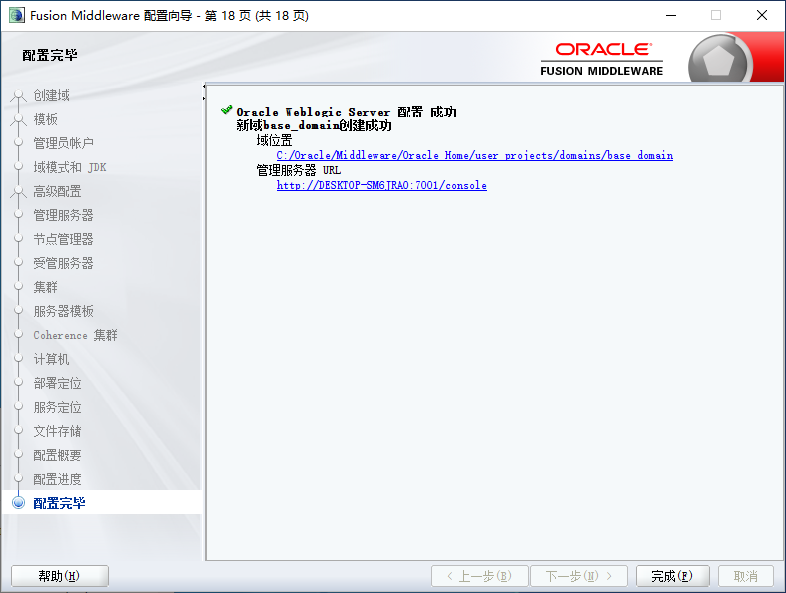
使用
WebLogic 启动位置：\user_projects\domains\base_domain
密码及解密
参考文章：
补充：
参考文章破解的密码为 AES 加密，且存在成功率问题。
密码文件
密码文件位置
- 账号权限：weblogic或root用户权限，能查看weblogic域文件
- 密钥文件：SerializedSystemIni.dat
SerializedSystemIni.dat是解密的核心文件，一般保存在weblogic域的security目录下。比如weblogic的domain目录为：
/root/Oracle/Middleware/user_projects/domains/base_domain/
那么SerializedSystemIni.dat文件一般在
/root/Oracle/Middleware/user_projects/domains/base_domain/security/SerializedSystemIni.dat
一个domain里面只会有一个这个文件，如果一个weblogic下有多个domain,可能会出现多个SerializedSystemIni.dat文件，这时候可以通过find一下就可以。由于系统有个自带sample目录也有该文件，所以出现多个结果，稍微分辨一下就可以。
- 密文文件
weblogic的密文分两类，一类是数据库连字符串]，一类是console登录用户名和密码。
数据库连接字符串一般是在config/jdbc目录下的jdbc.xml文件中:/root/Oracle/Middleware/user_projects/domains/base_domain/config/jdbc/tide-jdbc.xml
而console登录用户名和密码一般也是在security目录下：/root/Oracle/Middleware/user_projects/domains/base_domain/security/boot.properties
有了这几个文件后，便可以尝试对密文进行解密了。
加密算法
WebLogic不同版本之间使用的加密算法不同，越早的版本使用的加密算法相对简单。WebLogic 11g版本使用的是 AES加密。本文是基于 WebLogic 14.1.1.0.0。查看相关解密文件如下所示：
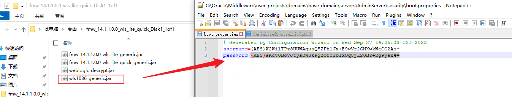
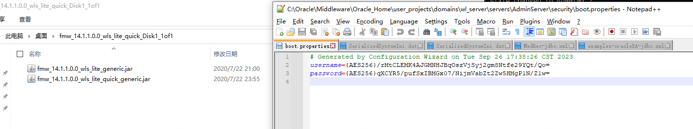
可见，14.1.1.0.0 版本开始使用了 AES256的方式进行加密。
AES256解密的相关文章详见：
AES解密
aes解密使用到了开源的工具:
NetSPI/WebLogicPasswordDecryptor: PowerShell script and Java code to decrypt WebLogic passwords
Import-Module .\Invoke-WebLogicPasswordDecryptor.psm1
Invoke-WebLogicPasswordDecryptor -SerializedSystemIni C:\SerializedSystemIni.dat -CipherText "{AES}8/rTjIuC4mwlrlZgJK++LKmAThcoJMHyigbcJGIztug="如果脚本执行出现错误为”脚本不可执行”，则可通过以下命令设置：
set-ExecutionPolicy RemoteSigned其中
- dat文件位置为：Middleware\user_projects\domains\base_domain\security；
- AES读取位置：
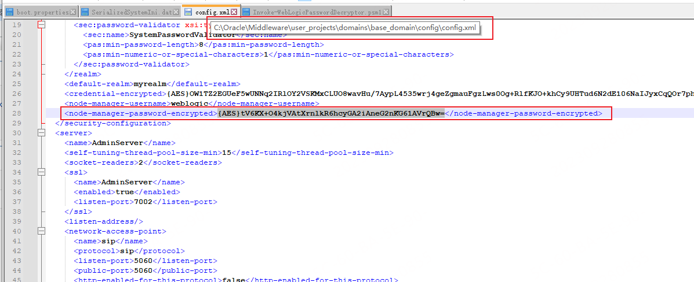
powsershell执行如下所示，解析到密码为 Admin@2022：
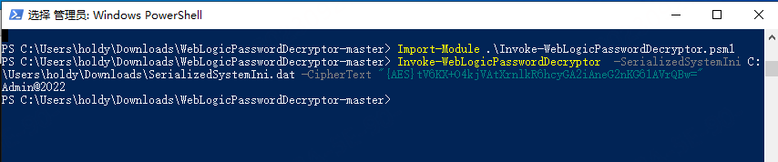
其中使用到了 BouncyCastle.Crypto.dll 这个库。
PS C:\Users\holdy\Downloads\WebLogicPasswordDecryptor-master> Invoke-WebLogicPasswordDecryptor -SerializedSystemIni C:\SerializedSystemIni.dat -CipherText "{AES}tV6KX+O4kjVAtXrnlkR6hcyGA2iAneG2nKG61AVrQBw="
CipherText = tV6KX+O4kjVAtXrnlkR6hcyGA2iAneG2nKG61AVrQBw=
NumberOfBytes = 4
Salt = 247 13 151 111
Version = 2
NumberOfBytes = 32
EncryptionKey = 182 5 182 201 80 192 124 79 178 92 210 60 73 149 134 152 75 12 141 62 110 174 78 134 22 114 245 27 244 137 109 0
Pass = 0 x c c b 9 7 5 5 8 9 4 0 b 8 2 6 3 7 c 8 b e c 3 c 7 7 0 f 8 6 f a 3 a 3 9 1 a 5 6
DecodedCipherText = 181 94 138 95 227 184 146 53 64 181 122 231 150 68 122 133 204 134 3 104 128 157 225 182 156 161 186 212 5 107 64 28
IV = 181 94 138 95 227 184 146 53 64 181 122 231 150 68 122 133
Admin@2022WebLogic 进程相关
运行进行：java.exe
暂无相关环境变量可供查询启动路径